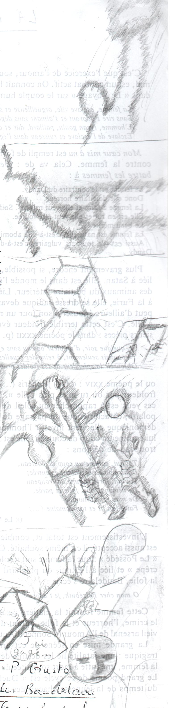
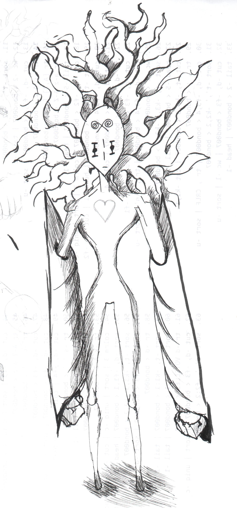
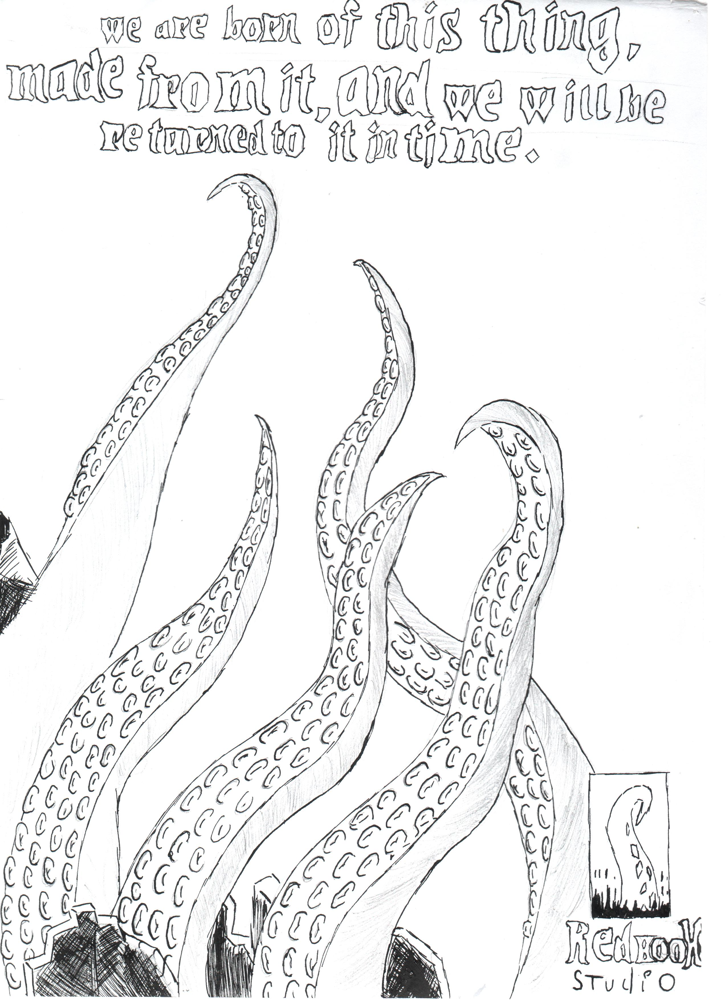
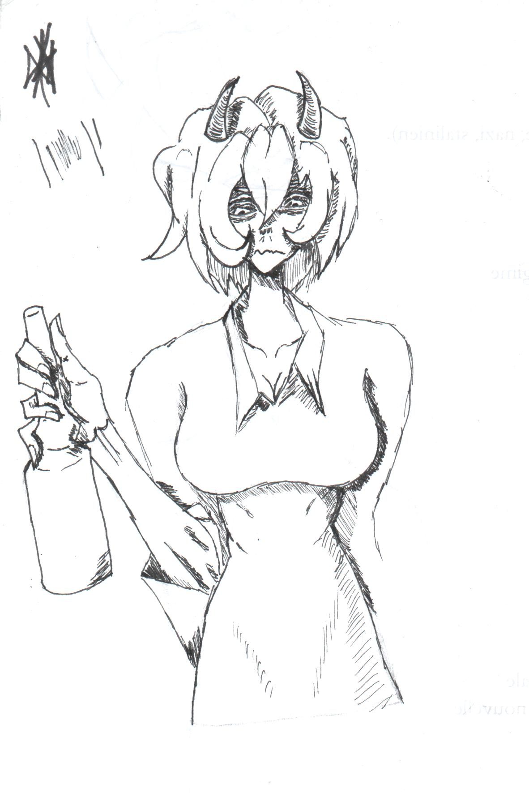
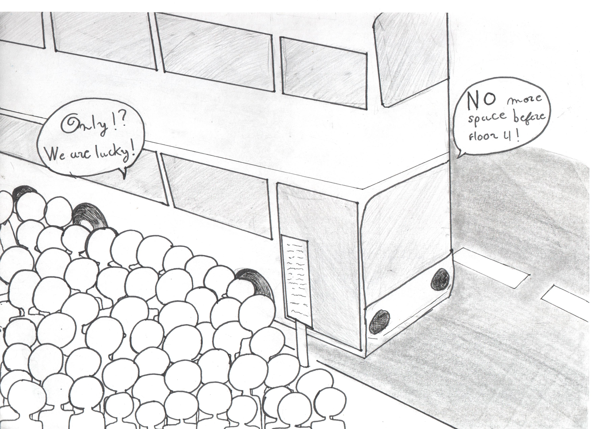
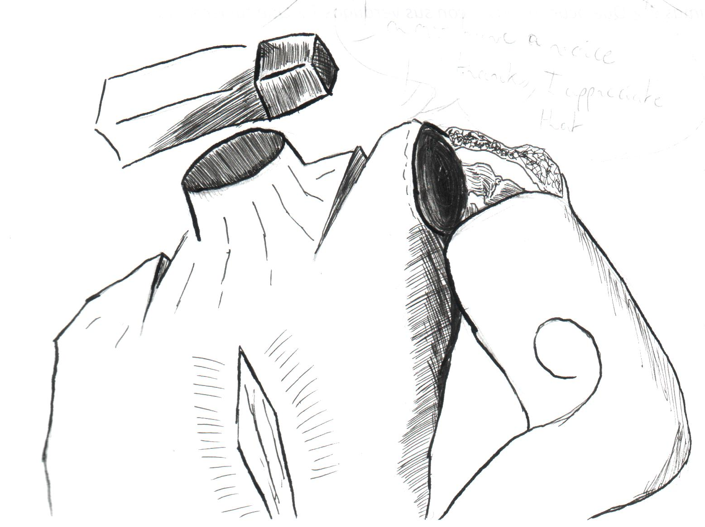
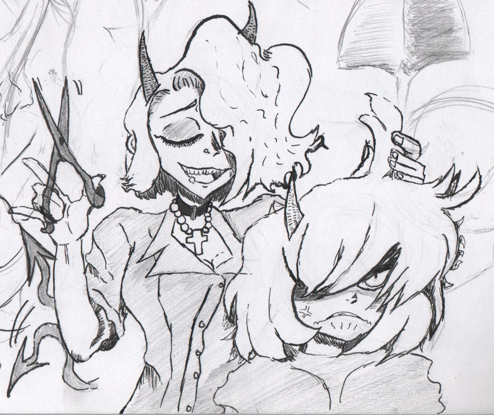
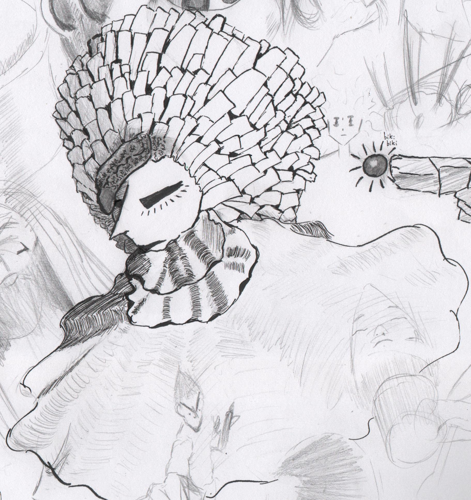
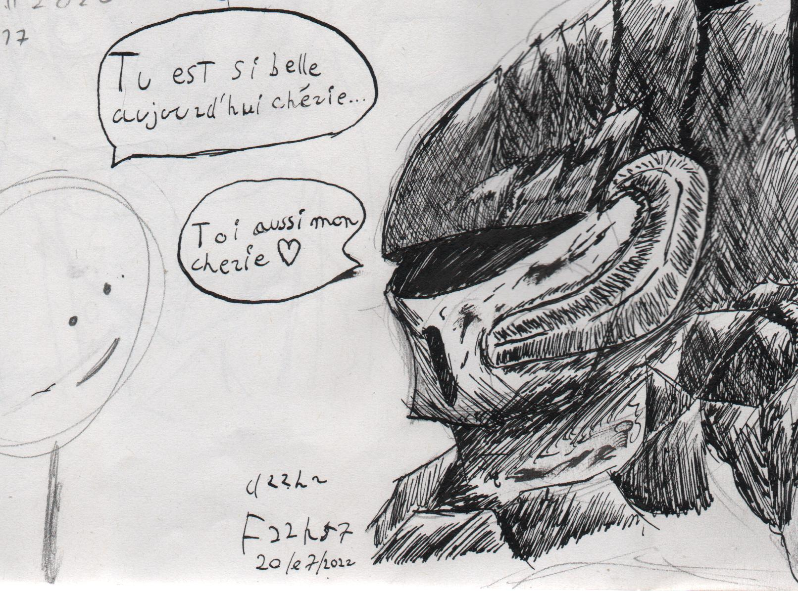

Galerie
Voici quelques dessins que j'ai jugé correct a montrer. J'ai commencé dessiner en première. Profitez-en parce qu'ils ne resteront probablement pas ici pour toujours.

dessin numéro 1
Personnages : deux personnages sans nom.
contexte : ils se battent avec des chaises.
Fait avec : crayon papier
Appareil : Image scanné
Date : début avril 2022

dessin numéro 2
Personnages : Bosculna (nom actuel)
contexte : personnage au design intéressant mais incomplet,
j'ai essayé de lui faire un corps en entier cette fois
Fait avec : crayon papier et Micro-pigments
Appareil : Image scanné
Date : fin 2023

dessin numéro 3
Personnages : humanoïde non nommé
contexte : premier dessin de ce personnage.
Son design est très inconstant également.
Il n'a pas trop changé.
Fait avec : Micro-pigments
Appareil : Image scanné
Date : fin 2022

dessin numéro 4
Personnages : Il n'y a que des tentacules
contexte : Dessin réalisé pour un cours de LLCER.
Il fallait choisir une phrase marquante.
Référence au jeux "Darkest Dungeon" par "Red Hook Studio"
Fait avec : Crayon papier et Micro-pigment
Appareil : Image scanné
Date : fin 2022

dessin numéro 5
Personnages : Malina ( du jeu "Helltaker" par "Vanrippear")
contexte :
Fait avec : Micro-pigments
Appareil : Image scanné
Date : fin 2022

dessin numéro 6
Personnages : Bosculna
contexte : Premier dessin du personnage.
Lui, a un peu plus changé.
Fait avec : crayon papier et Micro-pigments
Appareil : Image scanné
Date : late 2022

dessin numéro 7
Personnages : une foule et un bus
contexte : Dessin réalisé pour un cours de LLCER.
Il fallait montrer un problème actuel dans le futur.
Ici en locurrence, la surpopulation, avec légéreté.
Fait avec : Crayon papier et Micro-pigments
Appareil : Image scanné
Date : fin 2022

dessin numéro 8
Personnages : Hummanoïde non nommé
contexte : Une tentative d'apporter des changements a son design.
certains traits de crayon papier ne sont pas passé a la scanneuse.
Fait avec : Crayon papier et Micro-pigments
Appareil : Image scanné
Date : fin 2022
dessin numéro 9
Personnages : Cyborg non nommé
contexte : son design était intéressant, j'ai voulu mettre en valeur la prestance et l'aura que lui donne sa "chevelure".
Fait avec : Crayon papier et Micro-pigments
Appareil : Image scanné
Date : fin 2022

dessin numéro 10
Personnages : Zdrada et Malina ( du jeu "Helltaker" par "Vanrippear")
contexte : Un dessin de vanrippear remanié à ma manière.
Fait avec : Micro-pigments et crayon papier
Appareil : Image scanné
Date : fin Septembre 2023

dessin numéro 11
Personnages : Cyborg non nommé
contexte : Tentative de perspective légère, et d'augmenter le nombre de "mèche" pour voir le résultat.
Fait avec : Crayon papier et Micro-pigments
Appareil : Image Scanné
Date : fin 2023

dessin numéro 12
Personnages : Cyborg sans nom
contexte : Une illustration plus large et plus détaillé sur le personnage.
Ainsi que quelque tests sur le choix de la texture de la cape / foulard.
Fait avec : Micro-pigments et crayon papier
Appareil : Image scanné
Date : fin 2023

dessin numéro 13
Personnages : chevaleresse sans nom
contexte : Dessin fait après s'être lancé le défi de faire 1 dessin par jour.
Fait avec : plume (G-pen) et crayon papier
Appareil : Image scanné
Date : 20/07/2022 22h57

dessin numéro 25
Personnages : chalisfer,bosculna et beaucoup d'autres sans nom
contexte : Il s'agit d'une des nombreuses feuilles format a2
sur lesquels je dessine plein de chose sans réelle direction
ni objectif. Celle-ci est un peu plus présentable que les autres.
Fait avec : Micro-pigments,stylo, crayon gris.
Appareil : Photo prise par l'application "Genius scan"
Date : fin 2023~